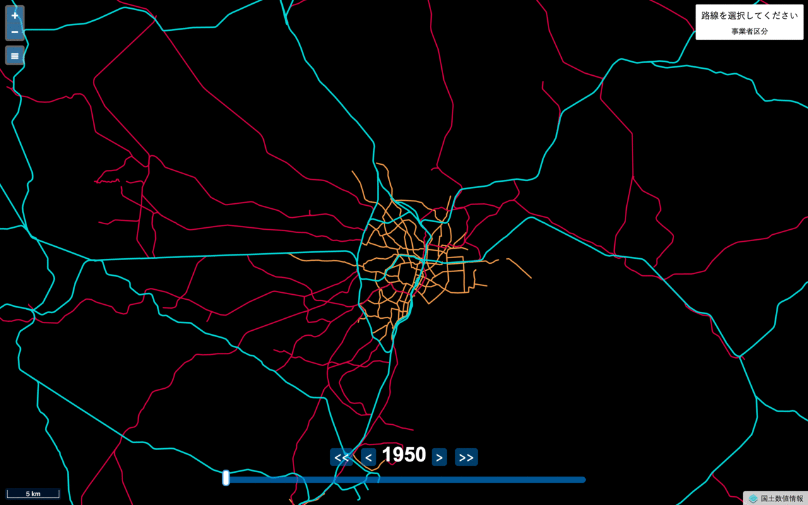

日本鉄道時系列地図
1950年から2017年までの日本全国の鉄道路線を表示した地図を作成しました。
日本鉄道時系列地図

URL: https://cieloazul310.github.io/railroad-timeline-map
日本鉄道時系列地図は、国土交通省が提供する地図データ（国土数値情報・鉄道時系列）を表示した地図です。1950年から2017年までに存在した日本全国の鉄道路線を表示しています。
機能
- 画面下のスライダーを操作することで、指定した年代のデータを表示することができます。
- 画面内の路線をクリックすると、路線を選択することができます。
- メニュー画面から表示する地図データを選択することができます。
- メニュー画面内の「現在地を表示」をクリックすると、地図内に現在地が表示されます。
データ
国土数値情報 鉄道時系列データをバイナリベクトルタイルに変換したもの
作ったきっかけ
最近WEB地図界隈で注目を浴びているバイナルベクトルタイルの作成・表示を試行していたところ、面白い感じになったので公開できる形にしてみました。
技術的側面
バイナリベクトルタイル
今話題になっているバイナリベクトルタイルという方式を使っています。 従来のベクトルタイルがGeoJSONで提供されているのに対し、バイナリベクトルタイルはより効率的なバイナリによるデータ形式で提供する方法です。読み込み、描写速度はGeoJSONタイルと比べ物にならないほど早いです。またGeoJSONタイルは広範囲を描写しようとするとどうしても重くなってしまいます。
正直バイナリベクトルタイルの仕組みは全然理解できていません。Google Protocol Buffers？シリアル化？全然わかりません。
ただ仕組みを理解せずとも作ることはできました。
→バイナリベクトルタイルを作ってみた
バイナリベクトルタイルの作成方法は以下のサイトを参考にしました。というかここに書かれている通りに手を動かしただけです。
→バイナリベクトルタイルの作り方 GUNMA GIS GEEK
表示するのも簡単です。OpenLayersやLeafletでの表示は従来のGeoJSONタイルと大きな違いはありません。
OpenLayers 4.3
WEB上で地図を表示するJavaScriptライブラリには、大きく二分すると自由に使えるものと、使用に制限のあるもの（アクセストークンが必要なもの）があります。 前者の主要なものにはOpenLayers、Leaflet.js、後者にはGoogle Maps API、Mapbox GL JSがあります。
ここ数年はLeafletが強い印象がありましたが、最近はLeafletからMapbox GL JSに移行する人が多くなっている印象があります。
ややレガシー化している印象のあるOpenLayersですが、2017年8月にリリースされたv4.3ではバイナリベクトルタイルの表示が快適になりました（現時点での最新バージョンはv4.4.2）。 バイナルベクトルタイルへの適応によってOpenLayersの復権もあるかもしれません。
その他
実は今回この地図を作る過程で、初めてwebpackやBabelを導入しました。
何かを作ったら下手なものでもいいから形にして公開することは大切だなと思いました。